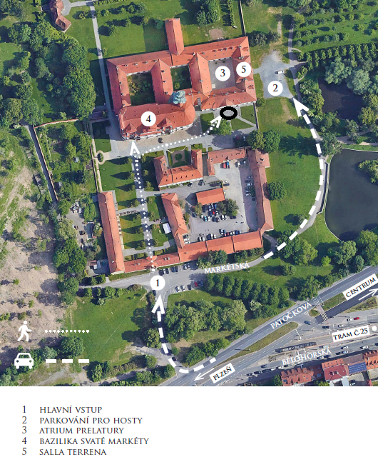
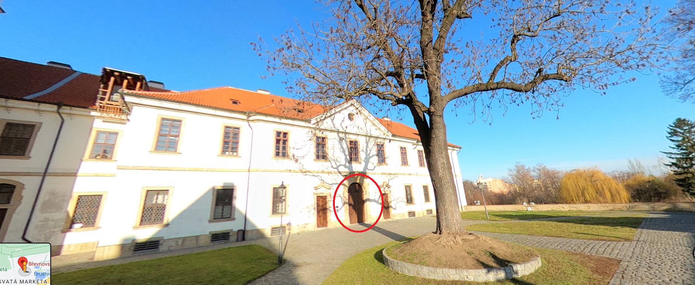
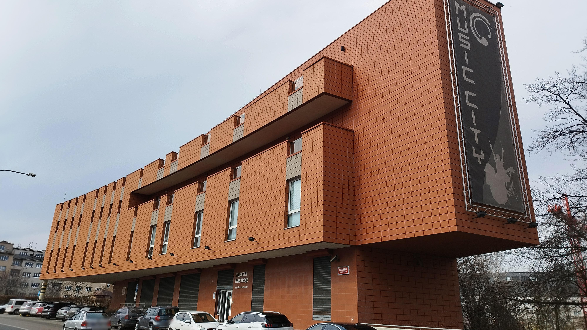
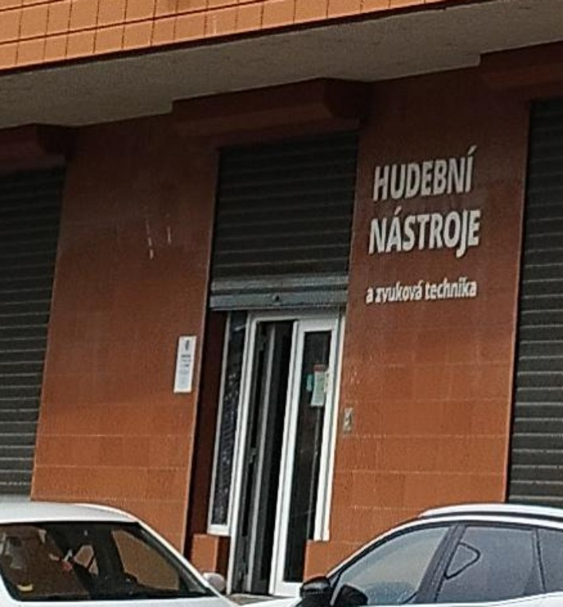

Víme, že ne každého na svatbě baví všechno. Taky víme, že když se člověk snaží nacpat všechno do jednoho dne, tak to může být dost vyčerpávající. Proto jsme se rozhodli svatbu rozložit do více dnů.
Je jenom na Tobě, kterých svatebních aktivit se budeš chtít zúčastnit. Klidně se zúčastni všeho, pokud Ti to všechno zní dobře. Ale klidně se zúčastni třebas jen jedné aktivity.
| co | kdy | od - do | kde | stručně, co je důležité |
|---|---|---|---|---|
| svatební obřad | čtvrtek 29. února | 14:00 - 15:00 | Tereziánský sál Břevnovského kláštera | vstup od 13:30, ne jehlové podpatky, ne házení čehokoli na novomanžele |
| párty | pátek 1. března | 16:00 - 03:00 | Vinohradský pivovar, Korunní 106 | raut, odpoledne až večer kapely k tanci i poslechu, poté jam session |
| online šifrovačka | sobota 2. března | 15:00 - 20:00 | kdekoli s připojením na internet | neorganizujeme my, každý si řeší sám |
| zoo | neděle 3. března | 13:00 - 17:00 | sraz u hlavního vstupu do ZOO Praha v Troji | vstupné na tobě, plán cesty uděláme podle nejoblíbenějších zvířátek |
| deskovky | úterý 5. března | 17:00 - 23:00 | Standard Cafe, Karolíny Světlé 321 | hrát se bude v podzemí kavárny, deskovky s sebou |
| procházka s kafem | středa 6. března | 13:45 - 18:00 | sraz u sousoší Tychona Brahe a Johanna Keplera na Pohořelci | procházka po našich oblíbených místech a kavárnách, hrneček s sebou |
| svatební koncert | pátek 8. března | 17:00 - ??:?? | Music City Club, Ocelářská 937 | zahrají Žamboši, Choroši, Jerry a Honza Jícha, pak se bude hrát do rána! |
Na párty jsme pro všechny zakoupili raut včetně piva, vína a nealko nápojů. Na ostatních aktivitách je to na Tobě.
Prosíme, pokud je to jen trochu možné, zvol cestu městskou hromadnou dopravou. V Praze to není s parkováním úplně jednoduchý, leckde se nedá zaparkovat vůbec, nebo jen hodně složitě.
Obřad je ve čtvrtek 29. února 2024 ve 14:00 v Tereziánském sále Břevnovského kláštera. Obřad není církevní. Ve 14:00 už začíná nástup ženicha, takže prosíme, abyste zaujali místo v sále nejpozději ve 13:55. Sál je přístupný od 13:30. Plánek a fotka vstupu je níže (číslo 4 na plánku nás nezajímá, tam to není; je to v čísle 5).
 Nakonec na obřad nezajišťujeme společnou cestu tramvají. Prosím, dopravte se na místo po vlastní ose. Pokud je to jenom trochu možné, využijte tramvaj č. 22 nebo 25 na zastávku Břevnovský klášter. U Kláštera budou parkovat dodavatelé květin a hudebníci, takže parkovací kapacity budou omezené.
Neřešte příliš dresscode. Bude fajn, když vám to bude slušet. Pro pány klidně oblek, pokud se v něm cítíte dobře, ale stačí košile nebo slušnější tričko a společenské kalhoty. Pro dámy jsou v pohodě jakékoli společenské šaty, kalhotový nebo sukňový kostýmek, nebo klidně blůza se společenskými kalhotami. Je možné přijít i v černé, vůbec nám to nevadí. Nemáme stanovené žádné barvy svatby, ale pokud vás to zajímá, tak nevěsta bude v bílém a ženich v černomodrém. Opakujeme jen pro jistotu, abyste si nebraly jehlové podpatky.
Na místě bude cca od 13:00 Anička Šusová, skvělá a milá žena, která vám řekne kudy kam, kde si odložit kabáty, kde jsou záchody, a kde se usadit či postavit (bude nás hodně, takže židlí bude méně než hostů). Své mazlíčky prosím nechejte doma. Kočárky je možné nechat dole pod schody. Anička Š. je naše dobrá víla pro tento den a všechny dotazy organizačního typu směřujte na ni. Poznáte jí tak, že bude mít na ruce náramek z květin. Náramek budou mít ještě dvě naše kamarádky, které budou případně také k dispozici pro vaše dotazy. Telefon na Aničku Š., kdybyste někde bloudili, je 775266264. Aničce ani Rudolfovi prosím během svatby nevolejte, patrně nebudou mít čas moc telefonovat :-)
Potěší nás, když na nás během obřadu nebudete koukat skrz objektivy fotoaparátů či podobných zařízení a raději si náš významný okamžik s námi užijete naživo. Na místě bude fotografka, fotky pak zveřejníme na webu.
Po obřadu budou následovat gratulace ještě v Tereziánském sále, který nám je k dispozici do 15:00. Pokud to dovolí počasí, tak po gratulacích uděláme špalír v atriu prelatury (číslo 3 na plánku), kterým novomanželé projdou. V atriu se smí házet rýže, takže pokud to vyjde, dostanete rýži a bude si moci zaházet; nikde jinde a nic jiného se házet nesmí (ani foukat bublifuky).
Poté se novomanželé s nejužší rodinou (rodiče a sourozenci s partnery a dětmi, svědci) přesunou na společnou obědovečeři, ostatní svatebčané mají pro ten den volno. Pokud máte pro novomanžele nějaký svatební dar, prosíme, preferovaně jej přineste až druhý den na svatební párty.
Zastávka tramvaje: Břevnovský klášter
Párty se bude konat v pátek 1. března 2024 ve spodním patře a sále Vinohradského pivovaru na Praze 10 (Korunní 2506). Můžete přicházet od 16:00. Klidně můžete přijít později a/nebo odejít dříve, to vůbec nevadí, prostě podle toho jak budete moci a chtít. Prostory máme rezervované do 3:00.
Anička bude ještě v krásných šatech, které má půjčené jen do neděle, Ruda plánuje být krásný celý týden 🙂. Zkrátka, tohle bude hned po obřadu ta asi nejvíc svatební součást svatebního týdne. (Kvůli těm šatům se ani tady nebudou smět bublat bublifuky, ty šaty to nemají rády.)
Večer budou moderovat a organizovat naše dobré duše Veronika Žáčiková a Izabela Petříková. S organizací jim bude pomáhat Anička Šusová, která pro vás bude případně k dispozici i na telefonu 775266264.
Hlavní program se bude odehrávat v sále, kde bude hrát živá hudba a v přestávkách zde budou probíhat různé svatební aktivity. V sále také budou natažené šňůry pro zavěšení svatebních přání a eventuálních drobných darů. Pokud nám chcete dát peníze, ideálně je zasílejte na bankovní účet 184310459/0600 (viz níže), případně je bude možné v hotovosti vložit do truhličky na místě.
Od hudby si budete moci odpočinout u stolů ve vedlejší místnosti, kde pro vás bude připravený raut. K dispozici vám bude také bar, kde si můžete volně objednávat alkoholické i nealkoholického pivo, víno a nealkoholické nápoje; tvrdý alkohol si platíte sami.
Přibližný orientační program:
Až skončí VeHiBa, kamarádi z kapely Isara si vezmou kytary a zahrají a zazpívají si s námi u stolu nejenom svoje písničky. Budeme rádi, pokud se přidáte se svým zpěvem. Pokud na něco hrajete, vezměte si to s sebou a můžete si zahrát taky!
Dresscodem na svatební party se zbytečně netrapte. Budeme rádi, pokud vám to bude slušet, nemusíte si brát oblek ani plesové šaty (ale můžete, pokud chcete). Vezměte si na sebe to, v čem se budete cítit dobře. Pokud chcete náš tip, tak si můžete vzít třeba šaty, sukni, společenské kalhoty nebo džíny, a k tomu blůzu, košili nebo tričko.
Zastávka tramvaje a autobusu: Orionka; kousek je také metro A Flora
Shodou okolností se od 15:00 do 20:00 hodin koná online šifrovačka Sendvič, které se jako obvykle účastníme s naším týmem “Divize nulou”.Můžete se také zúčastnit, schválně kdo z vás náš tým porazí 🙂. Po Sendviči se můžeme sejít online na Zoomu ve 20:30, a popovídat si o tom, jak se vám to líbilo a jestli se třeba někdy přidáš i na nějakou šifrovačku v terénu 🙂.
Šifrovačku nijak neorganizujeme, každý tým se musí přihlásit sám. Vstup na šifrovačku je zdarma, je jen třeba se registrovat na jejich stránkách. Dobrovolně je možné přispět na jakoukoli neziskovku libovolnou částkou. Budeme rádi, když tak učiníte 🙂. Během hry vám nebudeme moci radit, protože budeme luštit. Ale rádi navzájem propojíme zájemce, protože ve víc lidech se líp luští. Samozřejmě můžeš zapojit i jiné lidi než svatebčany.
Specifikem Sendviče je luštění ve dvou ‘kolech’, první část šifer se odkryje v 15:00 a čas na luštění je do 17:00, potom je hodina pauza na sendvič, a poté se v 18:00 odkryje druhá část šifer, na které je čas do 20:00. Nezapomeňte si proto doma připravit všechno na dobrou sváču 🙂
Sejdeme se ve 13:00 u hlavního vstupu do ZOO. ZOO má otevřeno do 17:00.
Rádi, ale dost málo, chodíme do ZOO. Tak jsme si řekli, že to třeba někdo má stejně 🙂. Vstup si bude hradit každý sám. Pokud by dávalo smysl nějaké rodinné nebo skupinové vstupné, domluvíme to na místě, podle toho, kolik nás bude. Poud by byl vstup do ZOO pro Tebe příliš velkým výdajem, ale hodně bys o to stál*a, napiš nám, pozveme Tě 🙂. Po vstupu budeme hlasovat o oblíbených zvířátkách, aby nebyl nikdo smutnej a každej viděl to svoje (pokud teda zrovna nebude spát…). Anička se jistě ráda zastaví u papoušků a jakýchkoli jiných voliér. Jelikož pražská ZOO nemá ptakopyska, bude Ruda trošku smutný. Ale i tak se rád koukne do Darwinova kráteru na ďábly medvědovité nebo na Šišku a celou luskouní rodinu. Jaký zvířátko potřebuješ vidět ty?
Kontaktní osobou budou přímo Anička a Ruda, 737880716 a 776577617. Bude se hodit zejména pokud dorazíte později a budete nás chtít v zoo najít.
Zastávka autobusu: Zoo Praha - Troja (bus č. 112 a 234)
Hodně rádi hrajeme deskové hry, takže si s vámi rádi taky něco zahrajeme.
Sejdeme se ve Standard Cafe (Karoliny Světlé 321/23, Praha 1), kde máme rezervaci v podzemí (na jméno Nováková). Můžete s sebou přinést něco, co byste si chtěli zahrát (ale nemusíte), my taky něco přineseme, a na místě uvidíme, jak to dopadne. Rezervaci máme od 17. hodiny a zavírá se asi po 23. hodině, my dva tam asi budem celou dobu, ale klidně přijďte i jen na část.
Založili jsme google dokument, kde se případně můžeme lehce předem domluvit, kdo se chystá přijít a jaké hry se chystá přinést. Dokument je na adrese https://bit.ly/rosovi-svatebni-deskovky. Ale nemusíte žádné hry nosit, bude jich tam jistě dost. A určitě směle doražte i pokud do google dokumentu nic nevyplníte a i pokud jste třebas v dotazníku vyplnili že spíš nedorazíte, vypadá to, že bychom se měli vejít.
V podniku si můžete nahoře na baru objednat nápoje i nějaké menší jídlo (můžete platit rovnou na baru, nebo si otevřít účet a zaplatit při odchodu). Pokud nechcete, aby se u vašich her jedlo a pilo, tak si to hlídejte. Našim hrám jídlo ani pití nevadí :-)
Podle toho, kdo jak kdy přijde a co kdo bude chtít hrát za hry, se vždycky nějak uskupinkujeme a něco si zahrajeme. Zájem přijít vyjádřilo asi 20 z vás. Většina her je pro 4 hráče, občas trochu víc, ale nejspíš se nás sejde ještě víc, takže pravděpodobně nebudeme hrát všichni spolu, ale rozdělíme se vždycky nějak do skupinek. Neplánujeme to nějak sofistikovaně organizovat, prostě se nějak sejdeme a něco si zahrajeme 🙂
Kontaktní osobou nejspíš bude Anička (737880716), ale možná nebude v podzemí mít signál, takže se ničeho nebojte a prostě doražte :-)
Zastávka tramvaje Karlovy lázně či Národní divadlo.
Sejdeme se ve 14:00 na Pohořelci před pomníkem Tychona Brahe a Johanna Keplera kam Anička chodila na gympl. Je to zastávka tram č. 22. Následně asi vyrazíme k Loretě a pak přes Nový Svět na Jánský vršek, takže pokud zmeškáte start, můžete nás zkusit dohonit :-)
Loreta by měla v celou hodinu zvonit zvonkohrou, takže pokud jste to ještě neslyšeli, tak můžete jít nejdřív na 2. hodinu k Loretě si to poslechnout a pak se k nám připojit na Pohořelci nebo na nás počkat u Lorety.
Ukážeme vám naše oblíbená místa v centru Prahy. Občas se někde zastavíme na kafe; pokud chcete být eco-friendly, můžete si vzít vlastní hrneček.
Na Pohořelci nebudeme startovat jen tak náhodou. Jednak je to skvělý výchozí bod pro objevování prahy, jednak tam Anička chodila na gympl. Z Pohořelce dojdeme přes Nový svět až na Malou Stranu, kde Ruda studoval a pracoval. Přejdme most na Staré Město, kde zase studovala Anička. Různými průchody a úzkými uličkami dobloudíme až na naše oblíbené Haštalské náměstí, a přitom se fikaně vyhneme Staroměstskému náměstí i největším davům turistům 🙂
Můžeš se samozřejmě připojovat a odpojovat v průběhu, někdo z účastníků bude k dispozici na telefonu ke sdílení bližší polohy a případné opozdilce nabereme cestou. Máme nějaký přibližný plán cesty, ale stejně uvidíme podle situace, takže pokud se budete připojovat v průběhu, pište či volejte na kontaktní číslo.
Pokud se budeš chtít stavit jen na dobrou kávu, jistě budeme mít delší zastávku u kostela sv. Haštala na Haštalském náměstí. Pokud tě tedy na procházky moc neužije, můžeš se stavit jen tam a dát si s námi dobrou kávu z blízké kavárny 🙂. Myslíme si, že tam dorazíme kolem 16. hodiny, ale je to plus mínus hodinu, takže na to radši nespoléhej a doptejte se na kontaktním čísle během dne.
Tohle je asi jediná akce, která je bublifuk-friendly! Takže pokud na nás chceš foukat bubliny z bublifuku, procházka Prahou je tvou příležitostí! (Akorát prosíme nefoukat bubliny do kafe.)
Kontaktní osobou bude Rudolf (776577617); pokud se budete chtít připojit později, volejte a pište a nějak se donavigujeme. A samozřejmě se jako vždy klidně můžete odpojit i dříve..
Zastávka: tramvaje Pohořelec (tram č. 22 a 23)
Svatební koncert bude v Music City Clubu ve 2. patře prodejny hudebních nástrojů Music City (Ocelářská 937). Jak se tam dostat dobře popisuje web Notování. Do budovy vstupte vchodem na dlouhé straně budovy (z ulice), který vidíte na fotce níže a bude označen cedulkou. Následně vystoupejte do druhého patra po schodech či výtahem.
 Koncert začne v 17:00, přijít můžete už okolo 16:30, abyste se stihli pohodlně usadit a třeba si dát první pivo či polévku.
Na svatebním koncertě zahrají naše oblíbené kapely a písničkáři: Choroši, Jerry, Žamboši a Honza Jícha.
Po skončení koncertu následuje jam session až do pozdních ranních hodin. Budeme rádi, když se přinesete své hudební nástroje a zazpíváte si s námi folkové i jiné písničky. Klub máme zamluvený až do sobotního poledne, takže prostor na společné jamování bude dost a dost 🙂.
Předběžný orientační program (teprve si budeme line-up potvrzovat s kapelami):
Občerstvení bude částečně samozajištěné. Na baru si můžete otevřít vlastní účet, nebo platit hned po objednání, pití bude na této akci na každém. Na baru by mělo být pivo a polévka. Tohle ještě upřesníme. Můžete také nějaké občerstvení přinést pro sebe i pro ostatní, třebas něco upéct a tak podobně; pokud máte v plánu něco chystat, domluvte se prosím s námi!
Jde o poklidnou poslechovou akci, na které budete mít příležitost si poslechnout naše oblíbené kapely.
Bude samozřejmě i možnost si prostě popovídat, a to jednak v přestávkách, jednak ve vedlejší místnosti. Vlastní koncert ale prosím svým povídáním nerušme.
Večer bude moderovat Anička s Rudou. Vybrali jsme si kapely, které jsou pro nás důležité, a tak se spíš než oficiality dozvíš, co nás s těmito hudebníky a jejich písničkami pojí 🙂
Jestli jsi o žádné z kapel nikdy neslyšel*a a chceš si radši okouknout, o čem to bude, tak mrkni třeba sem:
Kontaktní osobou nejspíš bude Anička Šusová (775266264).
Zastávka autobusů a metra B Českomoravská, případně tramvajová zastávka Poliklinika Vysočany
Nejvíc nás potěší, když přijdeš a zúčastníš se spolu s námi některých aktivit.
Pokud nám chceš něco dát, budeme rádi za finanční příspěvek na bankovní účet 184310459/0600 (můžeš načíst QR kód bankovní appkou) či hotově na místě.
Peníze jsou dost neosobní, proto je udělejme osobnější! Zkus nám darovat takovou částku, která vyjadřuje něco, co nějak souvisí se vztahem, který s námi máš.
Například:
A samozřejmě nám dej například ve zprávě pro příjemce vědět, co tato částka vyjadřuje :-)
Chceš-li nám dát i něco fyzického (třeba přání), tak prosíme, ať to je něco, co jde zavěsit na kolíček na šňůru, která bude natažená podél zdi na párty. Jinam než na obřad nebo párty prosíme fyzické dary nenos.
Ohledně svatby nás ideálně kontaktuj na svatebním e-mailu svatba@nikde.eu, to čteme oba. Případně piš přes Messenger či WhatsApp. Pokud radši telefonuješ, můžeš zavolat Aniččce na číslo 737 880 716.
Během svatby nám prosím nevolej. Pro každou svatební aktivitu oznámíme kontaktní osobu/osoby včetně kontaktních údajů: